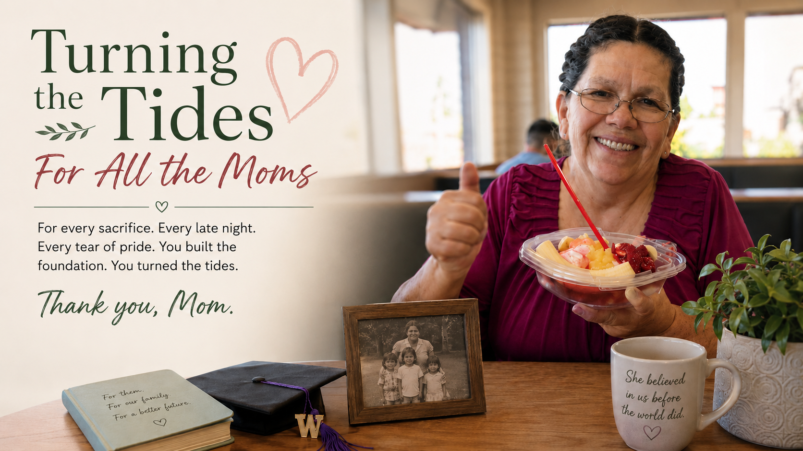

Turning the Tides — For All the Moms

A long time ago, someone on LinkedIn asked a question that stopped me: What was a defining moment for you? My answer was lost on a website I can't find anymore, but the gist of it is retold here...for Mom.
It was graduation day at the University of Washington. I was in my cap and gown, standing at one end of a long corridor, when she turned the corner at the other end. Even from that distance, I could see the tears. She didn't walk — she raced. And when she got to me and pulled me in, I had this sudden, startling realization: this was all for her.
For me, earning that degree had felt like checking something off a list. An accomplishment, sure. Something I was glad to finish. But for my mom? It was as if she was the one who had stayed up late cramming for midterms. She carried every exam, every paper, every semester right alongside me — and she felt the finish line in her bones the way I didn't.
She was raising us to be leaders. She worked graveyard shifts so she could be available during the day if any of us needed her. She dug through the couch cushions to scrape together enough change to buy milk so we could have cereal in the morning. She bit her tongue and patiently waited for each of us to survive our own rebellious teenage years. She proudly celebrated every single high school graduation, because she was the first of her siblings to have all of her kids do that. She led with grit. She showed us, by example, that you push through — especially in the toughest moments.
She wasn't just parenting. She was building something.
It wouldn't be until years later that I realized what I had actually done that day. No one in our family history — on either side, in any generation anyone could name — had earned a four-year degree before me. It wasn't necessarily about the credential itself. It was about proving something to the world: that we as a people were smart enough to rise above the poverty. That we could be leaders. I had turned the tides for our family.
The world has changed a lot since that day in the corridor.
Today, anything you want to learn is practically at your fingertips. And because so many people have been steered toward college as the only respectable path, we now have a serious shortage of people entering the trades — plumbing, road building, agriculture, electrical work, and more. Meanwhile, the cost of college has gotten so steep that a lot of today's young people are walking away from it without knowing what to do instead. There's no clear alternative being handed to them.
And there's a stigma that has built up around trade work — this quiet, corrosive idea that the trades are for people who couldn't handle college. As if choosing a different path is a lesser choice.
I went to college. I also grew up watching people who never went to college do brilliant, essential, irreplaceable things. I've seen the kind of intelligence that doesn't show up on a transcript. And I'm done with the idea that only one kind of learning counts.
I'd like to turn the tides again — for everyone this time.
For All the Moms
Elikonas is for all the moms out there who work hard to help their kids succeed. For all the moms who went to school — or who are in school right now — because they want more for their children. For all the moms who have cried at a graduation and felt it like a personal victory. For all the moms who worked in the trades, or in factories, like mine did, as a sacrifice so they could save a little toward something better.
For all the moms who are trying to figure out a path forward in a world that seems to change its rules every five minutes — we're making today's world of learning count. All of it. College, certification, trade school, self-directed learning, something that doesn't have a name yet. Whatever the path looks like.
Thanks, Mom. Thanks for leading with grit. For making me feel important. For all the sacrifice you made to build a better life for us. You continue to inspire me.